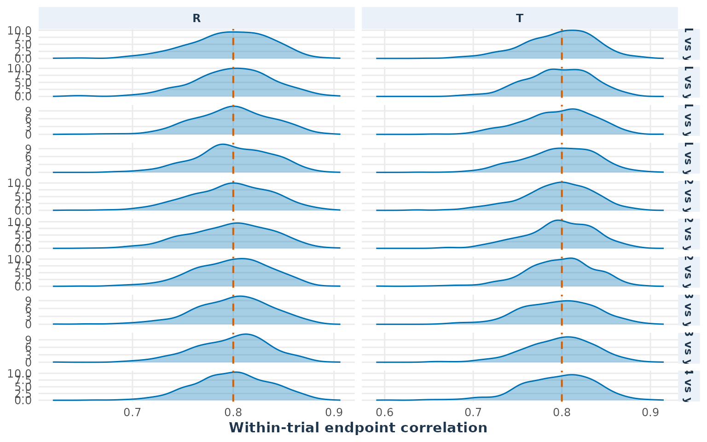

continuous_parallel.RmdIn the SimTOST R package, which is specifically designed
for sample size estimation for bioequivalence studies, hypothesis
testing is based on the Two One-Sided Tests (TOST) procedure. (Sozu et al.
2015) In TOST, the equivalence test is framed as a comparison
between the the null hypothesis of ‘new product is worse by a clinically
relevant quantity’ and the alternative hypothesis of ‘difference between
products is too small to be clinically relevant’. This vignette focuses
on a parallel design, with 2 arms/treatments and 5 primary
endpoints.
In the following two examples, we demonstrate the use of SimTOST for parallel trial designs with data assumed to follow a normal distribution on the log scale. We start by loading the package.
The examples follow a practical simulation workflow. We first specify the estimand, margins, outcome distribution, and endpoint dependence; next we estimate sample size or achieved power; finally we inspect the retained simulations. The diagnostics are deliberately separated from the power result: they help determine whether the simulated data match the assumptions used to obtain that result.
Here, we consider a bio-equivalence trial with 2 treatment arms and endpoints. The sample size is calculated to ensure that the test and reference products are equivalent with respect to all 5 endpoints. The true ratio between the test and reference products is assumed to be 1.05. Outcomes are simulated on the original scale from a log-normal distribution, with a standard deviation of on the log scale and independent endpoints (). The equivalence limits are set at 0.80 and 1.25. The significance level is 0.05. The sample size is determined at a power of 0.8.
This example is adapted from Mielke et al. (2018), who employed a difference-of-means test on the log scale. The log-normal analysis below uses a ratio-of-means TOST, which is equivalent to testing the difference on the log scale under the log-normal model.
In the first approach, we calculate the required sample size for 80% power using the sampleSize_Mielke() function. This method directly follows the approach described in Mielke et al. (2018), assuming a difference-of-means test on the log-transformed scale with specified parameters.
ssMielke <- sampleSize_Mielke(power = 0.8, Nmax = 1000, m = 5, k = 5, rho = 0,
sigma = 0.3, true.diff = log(1.05),
equi.tol = log(1.25), design = "parallel",
alpha = 0.05, adjust = "no", seed = 1234,
nsim = 1000)
ssMielke
#> Mielke sample-size calculation
#> Required sample size: 68
#> Achieved power: 0.824For 80% power, 68 subjects per arm (136 in total) would be required.
Alternatively, the sample size calculation can be performed using the
sampleSize() function. This
method simulates log-normal outcomes on the original scale and applies a
ratio-of-means test (ctype = "ROM"). The means and standard
deviations below are supplied on the original scale; a log-scale
standard deviation of 0.3 corresponds to the displayed coefficient of
variation.
mu_r <- setNames(rep(1.00, 5), paste0("y", 1:5))
mu_t <- setNames(rep(1.05, 5), paste0("y", 1:5))
sigma <- setNames(sqrt(exp(0.3^2) - 1) * mu_r, paste0("y", 1:5))
lequi_lower <- setNames(rep(0.8, 5), paste0("y", 1:5))
lequi_upper <- setNames(rep(1.25, 5), paste0("y", 1:5))
ss <- sampleSize(power = 0.8, alpha = 0.05,
mu_list = list("R" = mu_r, "T" = mu_t),
sigma_list = list("R" = sigma, "T" = sigma),
list_comparator = list("R_vs_T" = c("R", "T")),
list_lequi.tol = list("R_vs_T" = lequi_lower),
list_uequi.tol = list("R_vs_T" = lequi_upper),
dtype = "parallel", ctype = "ROM", distribution = "lnorm",
adjust = "no", ncores = 1, nsim = 1000, seed = 1234,
keep_sim_data = TRUE)
ss
#> Sample Size Calculation Results
#> -------------------------------------------------------------
#> Study Design: parallel trial targeting 80% power with a 5% type-I error.
#>
#> Comparisons:
#> R vs. T
#> - Endpoints Tested: y1, y2, y3, y4, y5
#> (multiple co-primary endpoints, m = 5 )
#> -------------------------------------------------------------
#> Parameter Value
#> Total Sample Size 138
#> Achieved Power 80.6
#> Power Confidence Interval 78 - 83
#> -------------------------------------------------------------For a two-arm parallel design, the reported sample size of
sampleSize() function is the total number of subjects (138), which
corresponds to 69 subjects per arm. This is close to the number of
patients obtained using the Mielke calculation. The two results need not
be identical: sampleSize_Mielke() simulates a
known-variance normal test statistic, while sampleSize()
simulates raw normal observations, estimates the variance in each trial,
and uses a t-based TOST. Monte Carlo error also affects both
estimates.
In scenarios with economic or ethical constraints, the sample size
may be fixed. In such cases, you can evaluate the achieved power for the
current configuration using simPower(). For example, you
can evaluate multiple base sample sizes (n = 50, 100) per arm using the
same log-normal assumptions. The resulting plot displays total sample
size on the x-axis and corresponding achieved power in y-axis.
fixed_power <- simPower(
n = c(50,100),
distribution = "lnorm",
mu_list = list(R = mu_r, T = mu_t),
sigma_list = list(R = sigma, T = sigma),
list_comparator = list(R_vs_T = c("R", "T")),
list_y_comparator = list(R_vs_T = paste0("y", 1:5)),
list_lequi.tol = list(R_vs_T = lequi_lower),
list_uequi.tol = list(R_vs_T = lequi_upper),
dtype = "parallel", ctype = "ROM", nsim = 1000, seed = 1234,
keep_sim_data = TRUE
)
fixed_power
#> Fixed-sample-size power curve
#> n n_total power power_LCI power_UCI
#> 50 100 0.551 0.5195339 0.5820694
#> 100 200 0.964 0.9499907 0.9743064The returned object contains the estimated power and its Monte Carlo
confidence interval in fixed_power$power,
fixed_power$power_LCI, and
fixed_power$power_UCI. Because
keep_sim_data = TRUE, it also contains the retained
model-scale observations in fixed_power$sim_data. Retaining
these observations increases memory use and is therefore disabled by
default.
The sampleSize() result is an object of class
simss. The standard methods provide complementary views of
the same simulation:
{r unified-result-methods, eval = TRUE, fig.width = 8, fig.height = 4.8, out.width = "100%", fig.align = "center"} print(ss) summary(ss) confint(ss) plot(ss)
print(ss) gives a compact overview of the design,
estimand, margins, sample size, and achieved power.
summary(ss) returns the main design and power information
in a structured form. confint(ss) extracts the Monte Carlo
confidence interval for achieved power. plot(ss) displays
the achieved power and its confidence interval across the candidate
sample sizes; for a parallel design, the x-axis uses total sample size.
These intervals quantify simulation uncertainty and are not confidence
intervals for the treatment effect.
In the second example, we set , and . This example is also adapted from Mielke et al. (2018), who employed a difference-of-means test on the log scale. The sample size calculation can again be conducted using two approaches, both of which are illustrated below.
In the first approach, we calculate the required sample size for 80% power using the sampleSize_Mielke() function. This method directly follows the approach described in Mielke et al. (2018), assuming a difference-of-means test on the log-transformed scale with specified parameters.
ssMielke <- sampleSize_Mielke(power = 0.8, Nmax = 1000, m = 5, k = 5, rho = 0.8,
sigma = 0.3, true.diff = log(1.05),
equi.tol = log(1.25), design = "parallel",
alpha = 0.05, adjust = "no", seed = 1234,
nsim = 10000)
ssMielke
#> Mielke sample-size calculation
#> Required sample size: 52
#> Achieved power: 0.8031
ss_value <- if (is.list(ssMielke)) ssMielke$SS else unname(ssMielke["SS"])For 80% power, 52 subjects per arm (104 in total) would be required.
Alternatively, the sample size calculation can be performed using the
sampleSize() function. This
method simulates log-normal outcomes on the original scale and uses a
ratio-of-means test (ctype = "ROM") with user-specified
values for mu_list, sigma_list, and the
correlation parameter rho.
mu_r <- setNames(rep(1.00, 5), paste0("y", 1:5))
mu_t <- setNames(rep(1.05, 5), paste0("y", 1:5))
sigma <- setNames(sqrt(exp(0.3^2) - 1) * mu_r, paste0("y", 1:5))
lequi_lower <- setNames(rep(0.8, 5), paste0("y", 1:5))
lequi_upper <- setNames(rep(1.25, 5), paste0("y", 1:5))
ss <- sampleSize(power = 0.8, alpha = 0.05,
mu_list = list("R" = mu_r, "T" = mu_t),
sigma_list = list("R" = sigma, "T" = sigma),
rho = 0.8, # high correlation between the endpoints
list_comparator = list("R_vs_T" = c("R", "T")),
list_lequi.tol = list("R_vs_T" = lequi_lower),
list_uequi.tol = list("R_vs_T" = lequi_upper),
dtype = "parallel", ctype = "ROM", distribution = "lnorm",
adjust = "no", ncores = 1, k = 5, nsim = 10000, seed = 1234)
ss
#> Sample Size Calculation Results
#> -------------------------------------------------------------
#> Study Design: parallel trial targeting 80% power with a 5% type-I error.
#>
#> Comparisons:
#> R vs. T
#> - Endpoints Tested: y1, y2, y3, y4, y5
#> (multiple co-primary endpoints, m = 5 )
#> -------------------------------------------------------------
#> Parameter Value
#> Total Sample Size 106
#> Achieved Power 80.1
#> Power Confidence Interval 79.3 - 80.9
#> -------------------------------------------------------------To verify the non-zero dependence assumption in this second scenario,
retain a moderate number of simulated trials at a fixed sample size. The
correlation plot is a model diagnostic: it shows whether the observed
endpoint correlations fluctuate around the value implied by
rho = 0.8.
correlated_power <- simPower(
n = 100,
distribution = "lnorm",
mu_list = list(R = mu_r, T = mu_t),
sigma_list = list(R = sigma, T = sigma),
rho = 0.8,
list_comparator = list(R_vs_T = c("R", "T")),
list_lequi.tol = list(R_vs_T = lequi_lower),
list_uequi.tol = list(R_vs_T = lequi_upper),
dtype = "parallel", ctype = "ROM", nsim = 500, seed = 1234,
keep_sim_data = TRUE
)
plot_distribution(correlated_power, estimand = "correlation",
arms = c("R", "T"))
The reference line is the correlation of the simulated endpoints, not the correlation between treatment arms. Arms are simulated independently; the dependence being checked is between endpoints measured on the same participant within an arm.